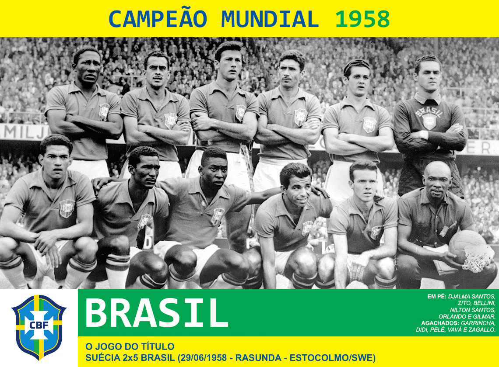
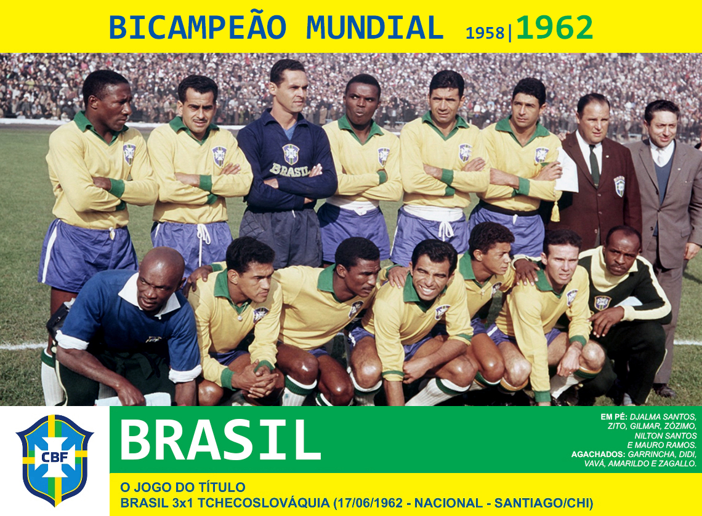
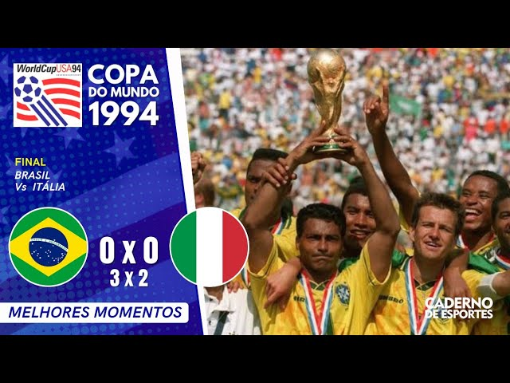

Futebol Brasileiro
Ídolos
- Pelé (1958–1970)
- Garrincha (1958–1962)
- Zico (1976–1989)
- Romário (1993–2000)
- Ronaldo Fenômeno (1996–2002)
- Neymar (2010–2015)
Clubes e Ligas
O Campeonato Brasileiro (Série A) é considerado um dos cinco mais fortes do mundo,
sendo o mais valioso da América do Sul.
Grandes clubes incluem Flamengo, Palmeiras, Santos, São Paulo, Corinthians, Grêmio,
Internacional, Cruzeiro, Atlético Mineiro, Vasco da Gama, Fluminense, entre outros.
Cenário Atual do Brasil
O cenário atual da Seleção Brasileira masculina de futebol (abril de 2026)
é de intensa preparação e busca por afirmação sob o comando do técnico Carlo Ancelotti,
visando a Copa do Mundo de 2026 nos Estados Unidos, Canadá e México.
Principais nomes do elenco atual (com base em convocações de 2026):
- Goleiros: Alisson, Ederson, Bento
- Defensores: Marquinhos, Gabriel Magalhães, Danilo, Bremer, Léo Pereira
- Meias: Casemiro, Bruno Guimarães, Lucas Paquetá, Douglas Santos
- Atacantes: Vinícius Júnior, Rodrygo, Raphinha, Endrick, Igor Thiago, Gabriel Martinelli, Matheus Cunha
Copas do Brasil

A final da Copa do Mundo de 1958, em 29 de junho, marcou o primeiro título mundial do Brasil, que venceu a Suécia por 5 a 2 no Estádio Råsunda. Apesar de sair atrás, a Seleção Brasileira virou o jogo com dois gols de Vavá, dois de Pelé (incluindo um antológico) e um de Zagallo, consagrando a equipe que encantou o mundo.

No dia 17 de junho de 1962, no Estádio Nacional de Santiago, o Brasil conquistou o bicampeonato mundial ao vencer a Tchecoslováquia por 3 a 1, de virada, na final da Copa do Mundo do Chile. Mesmo sem Pelé, lesionado, a equipe liderada por Garrincha e com gols de Amarildo, Zito e Vavá, assegurou o segundo título consecutivo.

Em 21 de junho de 1970, o venceu a Itália por 4 a 1 no Estádio Azteca, no México, conquistando o tricampeonato mundial (Taça Jules Rimet). Pelé, Gérson, Jairzinho e Carlos Alberto Torres marcaram os gols, consolidando a seleção como uma das melhores de todos os tempos.

Em 17 de julho de 1994, o conquistou o tetracampeonato mundial nos EUA ao vencer a Itália nos pênaltis por 3x2, após empate de 0x0. Foi a primeira final de Copa decidida na marca da cal, selada pelo erro de Roberto Baggio, após defesas cruciais de Taffarel e gols de Romário, Branco e Dunga.